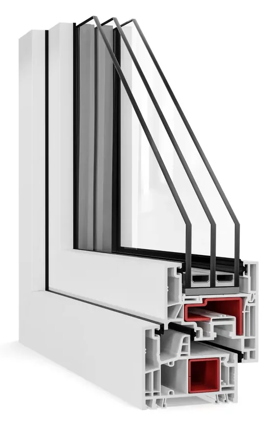
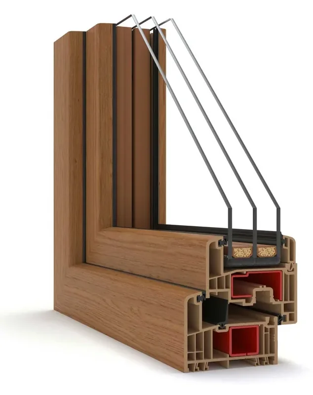
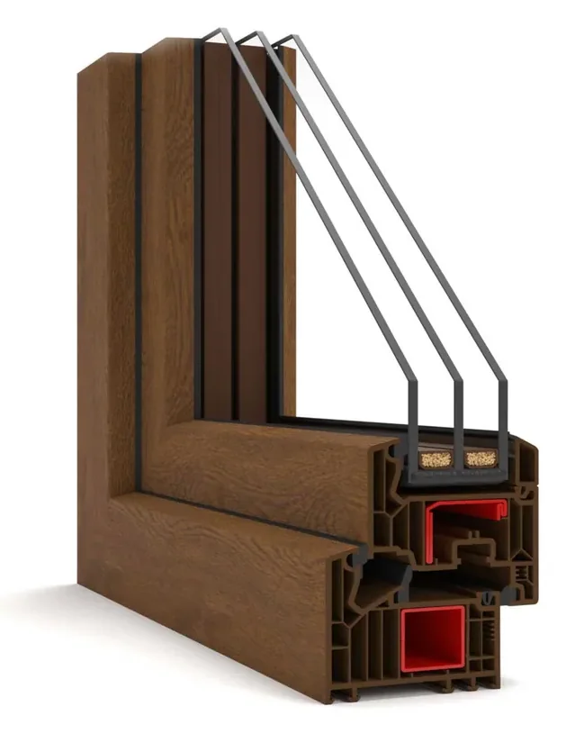
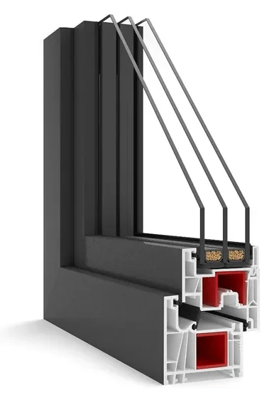
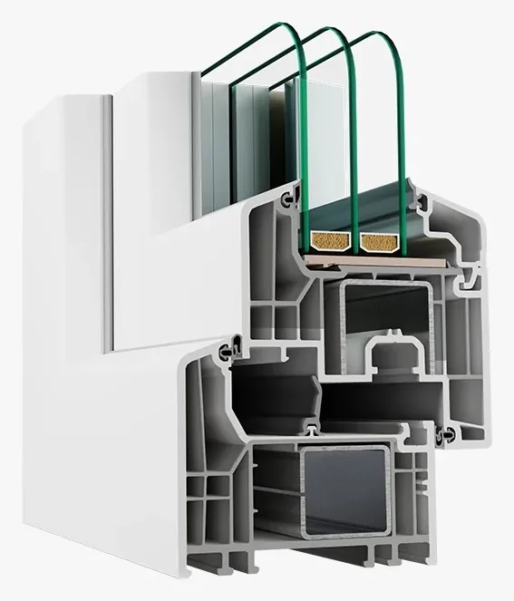
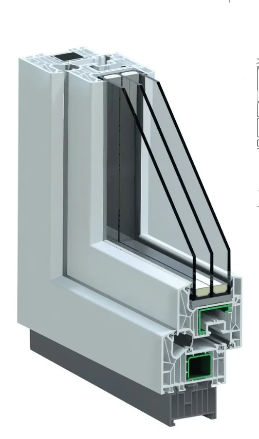
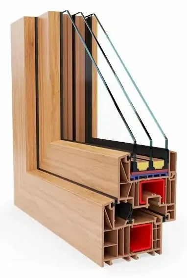

Okno PROTECTO
Opis i parametry profilu
Zwiększone bezpieczeństwo
Okna na profilu Gealan Kontur zapewniają wyższy poziom bezpieczeństwa. W produkcie zastosowano innowacyjną „płetwę antywłamaniową” wykonaną z PCV. To rozwiązanie antywłamaniowe uniemożliwia włamywaczom wyważenie okna. Płetwa antywłamaniowa jest skuteczną barierą dla włamywacza próbującego wyważyć skrzydło okienne za pomocą np. śrubokręta.
Profil
- 6-komorowy profil GEALAN
- kształtownik wzmocnienia tworzy w ramie siódmą komorę
- innowacyjna płetwa antywłamaniowa wykonana z PCV
- szerokość zabudowy 82,5 mm
- gładka powierzchnia ramy ułatwia mycie i konserwację
- system uszczelek przyszybowych zapewniający szczelność i niezawodność okna
- wzmocnienia stalowe zimnogięte ocynkowane, rama grubość 1,5 mm, skrzydło grubość 2 mm

Okno ENERGETIC
Opis i parametry profilu
Standard pasywny
Energetic to innowacyjny system na profilach Gealan S 9000 wyposażony w środkową uszczelkę, dedykowany dla okien, drzwi oraz drzwi podnoszono-przesuwnych. Przy zastosowaniu standardowych wzmocnień stalowych spełnia standard pasywny.
Profil
- 6-komorowa budowa ramy i skrzydła
- szerokość zabudowy 82,5 mm
- kształtownik wzmocnienia stalowego tworzy w ramie siódmą komorę
- gładka powierzchnia ramy ułatwia mycie i konserwację
- inteligentny system uszczelek rozmieszczonych w trzech płaszczyznach
- wzmocnienia stalowe zimnogięte ocynkowane, rama grubość 1,5 mm, skrzydło grubość 1,5 mm
- środkowa uszczelka w postaci przylgi

Okno VECTOR
Opis i parametry profilu
Skuteczna ochrona przed zimnem i hałasem
Okna 7-komorowe Vector, oparte na systemie Veka Softline 82, to idealne rozwiązanie dla domów energooszczędnych i pasywnych. Dzięki innowacyjnej konstrukcji okna PCV 7-komorowe skutecznie chronią wnętrza przed zimnem, wilgocią i hałasem, jednocześnie obniżając koszty ogrzewania budynku. Profil klasy A oraz doskonała izolacja termiczna sprawiają, że to rozwiązanie spełnia najwyższe standardy energooszczędności.
Profil
- układ trzech uszczelek (zewnętrznej, środkowej i wewnętrznej) doskonale izoluje hałas, wilgoć, zimno i przeciągi; uszczelka środkowa jest solidnie zamocowana do ramy
- stalowe wzmocnienia zimnogięte ocynkowane gwarantują wysoką statykę oraz odporność na uszkodzenia
- profil o szerokości zabudowy 82 mm, w klasie A (grubość ścianek zewnętrznych 3 mm)

Okno CONTUR
Opis i parametry profilu
Nowoczesny wygląd
Prosta, przejrzysta koncepcja projektowa systemu Gealan Linear uwzględnia trendy architektoniczne, w ramach których proponowane są okna o prostych, wyrazistych konturach. Dzięki smukłemu i eleganckiemu wyglądowi okna stanowią idealne dopełnienie nowoczesnego budownictwa, a zwłaszcza minimalistycznych, prostych wnętrz.
Profil
- 6-komorowy profil GEALAN
- szerokość zabudowy 74 mm

Okno HENSPERFECT
Opis i parametry profilu
Tradycyjne wzornictwo
Tradycyjna, ponadczasowa koncepcja projektowa systemu HENSPERFECT uwzględnia klasyczne trendy architektoniczne, w ramach których proponowane są okna o wyrazistych przylgach i eleganckim wyglądzie. Dzięki solidnemu wykończeniu okna stanowią idealne dopełnienie tradycyjnego oraz energooszczędnego budownictwa, a zwłaszcza obiektów poddawanych renowacji.
Wszechstronność zastosowań
Kompletny system premium przeznaczony do budowy okien oraz drzwi balkonowych o głębokości zabudowy 84 mm. Zoptymalizowana, 6-komorowa konstrukcja profili zapewnia najwyższą kompatybilność, szczelność oraz doskonałą izolację termiczną.

Schüco LivIng
Opis i parametry profilu
To system, który wyznacza nowoczesne standardy dla okien PVC. Dzięki zastosowaniu zaawansowanych profili oraz technologii wielokomorowej okna oferują:
- znakomitą izolację termiczną i akustyczną
- wytrzymałość na warunki atmosferyczne
- możliwość personalizacji kształtu i koloru
- bezpieczeństwo dzięki okuciom Winkhaus activPilot
To rozwiązania, które łączą energooszczędność z minimalistyczną estetyką.

Salamander bluEvolution 82
Opis i parametry profilu
To energooszczędny, 6-komorowy profil okienny z PVC o głębokości zabudowy 82 mm i eleganckiej estetyce.
Ciepło i oszczędność
Trzy uszczelki i głęboki profil (82 mm) skutecznie zatrzymują ciepło w domu, obniżając rachunki za ogrzewanie.